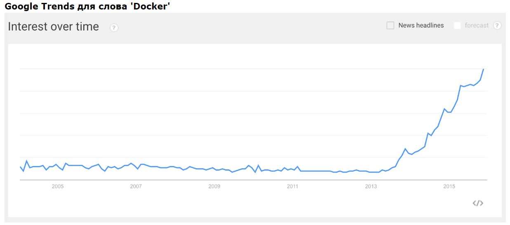
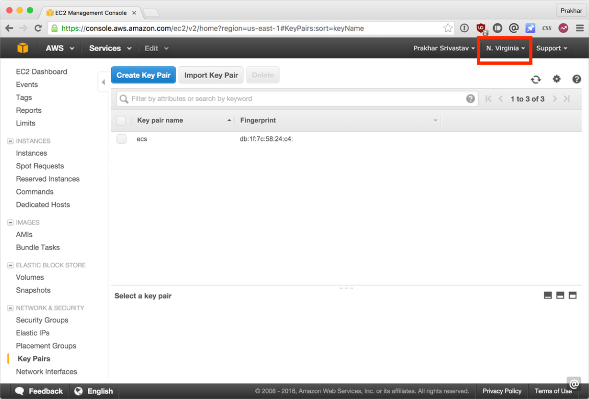

Содержание
Что такое Докер?
Определение Докера в Википедии звучит так:
программное обеспечение для автоматизации развёртывания и управления приложениями в среде виртуализации на уровне операционной системы; позволяет «упаковать» приложение со всем его окружением и зависимостями в контейнер, а также предоставляет среду по управлению контейнерами.
Ого! Как много информации. Простыми словами, Докер это инструмент, который позволяет разработчикам, системными администраторам и другим специалистам деплоить их приложения в песочнице (которые называются контейнерами), для запуска на целевой операционной системе, например, Linux. Ключевое преимущество Докера в том, что он позволяет пользователям упаковать приложение со всеми его зависимостями в стандартизированный модуль для разработки. В отличие от виртуальных машин, контейнеры не создают такой дополнительной нагрузки, поэтому с ними можно использовать систему и ресурсы более эффективно.
Что такое контейнер?
Стандарт в индустрии на сегодняшний день — это использовать виртуальные машины для запуска приложений. Виртуальные машины запускаю приложения внутри гостевой операционной системы, которая работает на виртуальном железе основной операционной системы сервера.
Виртуальные машины отлично подходят для полной изоляции процесса для приложения: почти никакие проблемы основной операционной системы не могут повлиять на софт гостевой ОС, и наоборот. Но за такую изоляцию приходится платить. Существует значительная вычислительная нагрузка, необходимая для виртуализации железа гостевой ОС.
Контейнеры используют другой подход: они предоставляют схожий с виртуальными машинами уровень изоляции, но благодаря правильному задействованию низкоуровневых механизмов основной операционной системы делают это с в разы меньшей нагрузкой.
Почему я должен использовать их?
Взлет Докера был по-настоящему эпичным. Не смотря на то, что контейнеры сами по себе — не новая технология, до Докера они не были так распространены и популярны. Докер изменил ситуацию, предоставив стандартный API, который сильно упростил создание и использование контейнеров, и позволил сообществу вместе работать над библиотеками по работе с контейнерами. В статье, опубликованной в The Register в середине 2014 говорится, что Гугл поддерживает больше двух миллиардов контейнеров в неделю.

В дополнение к продолжительному росту Докера, компания-разработчик Docker Inc. была оценена в два с лишним миллиарда долларов! Благодаря преимуществам в эффективности и портативности, Докер начал получать все больше поддержки, и сейчас стоит во главе движения по контейнеризации (containerization). Как современные разработчики, мы должны понять этот тренд и выяснить, какую пользу мы можем получить из него.
Чему меня научит это пособие?
Это единое и полное пособие по всем аспектам работы с Докером. Кроме разъяснения мифов о Докере и его экосистеме, оно позволит вам получит небольшой опыт по сборке и деплою собственных веб-приложений в облаке. Мы будем использовать Amazon Web Services для деплоя статичных сайтов, и два динамических веб-приложения задеплоим на EC2 с использованием Elastic Beanstalk и Elastic Container Service. Даже если вы никогда ничего не деплоили, это пособие даст вам все необходимое.
Как использовать этот документ
Этот документ содержит несколько разделов, каждый из которых посвящен определенному аспекту Докера. В каждом разделе мы будем вводить команды или писать код. Весь код доступен в репозитории на Гитхабе.
Внимание: В этом пособии используется версия Докера 1.12.0-rc2. Если вы столкнулись с несовместимостью, пожалуйста, отправьте issue. Спасибо!
Все, что нужно для прохождения этого пособия это базовые навыки с командной строкой и текстовым редактором. Опыт разработки веб-приложений будет полезен, но не обязателен. В течение работы мы столкнемся с несколькими облачными сервисами. Вам понадобится создать аккаунт на этих сайтах:
Установка и настройка всех необходимых инструментов может быть тяжелой задачей, но, к счастью, Докер стал довольно стабильным, и установка и запуск его на любой ОС стало очень простой задачей. Итак, установим Докер.
Докер
Еще несколько релизов назад запуск Докера на OS X и Windows был был проблемным. Но команда разработчиков проделала огромную работу, и сегодня весь процесс — проще некуда. Этот туториал getting started включает в себя подробные инструкции по установке на Мак, Linux и Windows.
Проверим, все ли установлено корректно:
$ docker run hello-world
Hello from Docker.
This message shows that your installation appears to be working correctly.
...
Python
Python обычно предустановлен на OS X и на большинстве дистрибутивов Linux. Если вам нужно установить Питон, то скачайте установщик здесь.
Проверьте версию:
$ python --version
Python 2.7.11
Мы будем использовать pip для установки пакетов для нашего приложения. Если pip не установлен, тоскачайте версию для своей системы.
Для проверки запустите такую команду:
$ pip --version
pip 7.1.2 from /Library/Python/2.7/site-packages/pip-7.1.2-py2.7.egg (python 2.7)
Java (не обязательно)
Разрабатываемое нами приложение будет использовать Elasticsearch для хранения и поиска. Для локального запуска Elasticsearch вам понадобится Java. В этом пособии все будет запускаться внутри контейнера, так что локально не обязательно иметь Java. Если Java установлена, то команда java -version должна сгенерировать подобный вывод:
$ java -version
java version "1.8.0_60"
Java(TM) SE Runtime Environment (build 1.8.0_60-b27)
Java HotSpot(TM) 64-Bit Server VM (build 25.60-b23, mixed mode)
Теперь, когда все необходимое установлено, пора взяться за работу. В этом разделе мы запустим контейнерBusybox на нашей системе и попробуем запустить docker run.
Для начала, запустите следующую команду:
$ docker pull busybox
Внимание: в зависимости от того, как вы устанавливали Докер на свою систему, возможно появление сообщения permission denied. Если вы на Маке, то удостоверьтесь, что движок Докер запущен. Если вы на Линуксе, то запустите эту команду с sudo. Или можете создать группу docker чтобы избавиться от этой проблемы.
Команда pull скачивает образ busybox из регистра Докера и сохраняет его локально. Можно использовать команду docker images, чтобы посмотреть список образов в системе.
$ docker images
REPOSITORY TAG IMAGE ID CREATED VIRTUAL SIZE
busybox latest c51f86c28340 4 weeks ago 1.109 MB
Отлично! Теперь давайте запустим Докер-контейнер с этим образом. Для этого используем волшебную команду docker run:
$ docker run busybox
$
Подождите, ничего не произошло! Это баг? Ну, нет. Под капотом произошло много всего. Докер-клиент нашел образ (в нашем случае, busybox), загрузил контейнер и запустил команду внутри этого контейнера. Мы сделали docker run busybox, но не указали никаких команд, так что контейнер загрузился, запустилась пустая команда и программа завершилась. Ну, да, как-то обидно, так что давайте сделаем что-то поинтереснее.
$ docker run busybox echo "hello from busybox"
hello from busybox
Ура, наконец-то какой-то вывод. В нашем случае клиент Докера послушно запустил команду echo внутри контейнера, а потом вышел из него. Вы, наверное, заметили, что все произошло очень быстро. А теперь представьте себе, как нужно загружать виртуальную машину, запускать в ней команду и выключать ее. Теперь ясно, почему говорят, что контейнеры быстрые!
Теперь давайте взглянем на команду docker ps. Она выводит на экран список всех запущенных контейнеров.
$ docker ps
CONTAINER ID IMAGE COMMAND CREATED STATUS PORTS NAMES
Контейнеров сейчас нет, поэтому выводится пустая строка. Не очень полезно, поэтому давайте запустим более полезный вариант: docker ps -a
$ docker ps -a
CONTAINER ID IMAGE COMMAND CREATED STATUS PORTS NAMES
305297d7a235 busybox "uptime" 11 minutes ago Exited (0) 11 minutes ago distracted_goldstine
ff0a5c3750b9 busybox "sh" 12 minutes ago Exited (0) 12 minutes ago elated_ramanujan
Теперь виден список всех контейнеров, которые мы запускали. В колонке STATUS можно заметить, что контейнеры завершили свою работу несколько минут назад.
Вам, наверное, интересно, как запустить больше одной команды в контейнере. Давайте попробуем:
$ docker run -it busybox sh
/ # ls
bin dev etc home proc root sys tmp usr var
/ # uptime
05:45:21 up 5:58, 0 users, load average: 0.00, 0.01, 0.04
Команда run с флагом -it подключает интерактивный tty в контейнер. Теперь можно запускать сколько угодно много команд внутри. Попробуйте.
Опасно!: Если хочется острых ощущений, то можете попробовать rm -rf bin в контейнере. Но удостоверьтесь, что запускаете ее внутри контейнера, а не снаружи. Если сделаете это снаружи, на своем компьютере, то будет очень плохо, и команды вроде ls, echo перестанут работать. Когда внутри контейнера все перестанет работать, просто выйдете и запустите его заново командой docker run -it busybox sh. Докер создает новый контейнер при запуске, поэтому все заработает снова.
На этом захватывающий тур по возможностям команды docker run закончен. Скорее всего, вы будете использовать эту команду довольно часто. Так что важно, чтобы мы поняли как с ней обращаться. Чтобы узнать больше о run, используйте docker run --help, и увидите полный список поддерживаемых флагов. Скоро мы увидим еще несколько способов использования docker run.
Перед тем, как продолжать, давайте вкратце рассмотрим удаление контейнеров. Мы видели выше, что с помощью команды docker ps -a все еще можно увидеть остатки завершенных контейнеров. На протяжении этого пособия, вы будете запускать docker run несколько раз, и оставшиеся, бездомные контейнеры будут съедать дисковое пространство. Так что я взял за правило удалять контейнеры после завершения работы с ними. Для этого используется команда docker rm. Просто скопируйте ID (можно несколько) из вывода выше и передайте параметрами в команду.
$ docker rm 305297d7a235 ff0a5c3750b9
305297d7a235
ff0a5c3750b9
При удалении идентификаторы будут снова выведены на экран. Если нужно удалить много контейнеров, то вместо ручного копирования и вставления можно сделать так:
$ docker rm $(docker ps -a -q -f status=exited)
Эта команда удаляет все контейнеры, у которых статус exited. Флаг -q возвращает только численные ID, а флаг -f фильтрует вывод на основе предоставленных условий. Последняя полезная деталь — команде docker run можно передать флаг --rm, тогда контейнер будет автоматически удаляться при завершении. Это очень полезно для разовых запусков и экспериментов с Докером.
Также можно удалять ненужные контейнеры командой docker rmi.
В предыдущем разделе мы использовали много специфичного для Докера жаргона, и многих это может запутать. Перед тем, как продолжать, давайте разберем некоторые термины, которые часто используются в экосистеме Докера.
Супер! Теперь мы научились работать с docker run, поиграли с несколькими контейнерами и разобрались в терминологии. Вооруженные этими знаниями, мы готовы переходить к реальным штукам: деплою веб-приложений с Докером!
Давайте начнем с малого. Вначале рассмотрим самый простой статический веб-сайт. Скачаем образ из Docker Hub, запустим контейнер и посмотрим, насколько легко будет запустить веб-сервер.
Поехали. Для одностраничного сайта нам понадобится образ, который я заранее создал для этого пособия и разместил в регистре - prakhar1989/static-site. Можно скачать образ напрямую командой docker run.
$ docker run prakhar1989/static-site
Так как образа не существует локально, клиент сначала скачает образ из регистра, а потом запустит его. Если все без проблем, то вы увидите сообщение Nginx is running... в терминале. Теперь сервер запущен. Как увидеть сайт в действии? На каком порту работает сервер? И, что самое важное, как напрямую достучаться до контейнера из хост-контейнера?
В нашем случае клиент не открывает никакие порты, так что нужно будет перезапустить команду docker run чтобы сделать порты публичными. Заодно давайте сделаем так, чтобы терминал не был прикреплен к запущенному контейнеру. В таком случае можно будет спокойно закрыть терминал, а контейнер продолжит работу. Это называется detached mode.
$ docker run -d -P --name static-site prakhar1989/static-site
e61d12292d69556eabe2a44c16cbd54486b2527e2ce4f95438e504afb7b02810
Флаг -d открепит (detach) терминал, флаг -P сделает все открытые порты публичными и случайными, и, наконец, флаг --name это имя, которое мы хотим дать контейнеру. Теперь можно увидеть порты с помощью команды docker port [CONTAINER].
$ docker port static-site
80/tcp -> 0.0.0.0:32769
443/tcp -> 0.0.0.0:32768
Откройте http://localhost:32769 в своем браузере.
Замечание: Если вы используете docker-toolbox, то, возможно, нужно будет использовать docker-machine ip default чтобы получить IP-адрес.
Также можете обозначить свой порт. Клиент будет перенаправлять соединения на него.
$ docker run -p 8888:80 prakhar1989/static-site
Nginx is running...
Чтобы остановить контейнер запустите docker stop и укажите идентификатор (ID) контейнера.
Согласитесь, все было очень просто. Чтобы задеплоить это на реальный сервер, нужно просто установить Докер и запустить команду выше. Теперь, когда вы увидели, как запускать веб-сервер внутри образа, вам, наверное, интересно — а как создать свой Докер-образ? Мы будем изучать эту тему в следующем разделе.
Мы касались образов ранее, но в этом разделе мы заглянем глубже: что такое Докер-образы и как создавать собственные образы. Наконец, мы используем собственный образ чтобы запустить приложение локально, а потом задеплоим его на AWS, чтобы показать друзьям. Круто? Круто! Давайте начнем.
Образы это основы для контейнеров. В прошлом примере мы скачали (pull) образ под названием Busybox из регистра, и попросили клиент Докера запустить контейнер, основанный на этом образе. Чтобы увидеть список доступных локально образов, используйте команду docker images.
$ docker images
REPOSITORY TAG IMAGE ID CREATED VIRTUAL SIZE
prakhar1989/catnip latest c7ffb5626a50 2 hours ago 697.9 MB
prakhar1989/static-site latest b270625a1631 21 hours ago 133.9 MB
python 3-onbuild cf4002b2c383 5 days ago 688.8 MB
martin/docker-cleanup-volumes latest b42990daaca2 7 weeks ago 22.14 MB
ubuntu latest e9ae3c220b23 7 weeks ago 187.9 MB
busybox latest c51f86c28340 9 weeks ago 1.109 MB
hello-world latest 0a6ba66e537a 11 weeks ago 960 B
Это список образов, которые я скачал из регистра, а также тех, что я сделал сам (скоро увидим, как это делать). TAG — это конкретный снимок или снэпшот (snapshot) образа, а IMAGE ID — это соответствующий уникальный идентификатор образа.
Для простоты, можно относиться к образу как к git-репозиторию. Образы можно коммитить с изменениями, и можно иметь несколько версий. Если не указывать конкретную версию, то клиент по умолчанию используетlatest. Например, можно скачать определенную версию образа ubuntu:
$ docker pull ubuntu:12.04
Чтобы получить новый Докер-образ, можно скачать его из регистра (такого, как Docker Hub) или создать собственный. На Docker Hub есть десятки тысяч образов. Можно искать напрямую из командной строки с помощью docker search.
Важно понимать разницу между базовыми и дочерними образами:
Существуют официальные и пользовательские образы, и любые из них могут быть базовыми и дочерними.
Теперь, когда мы лучше понимаем, что такое образы и какие они бывают, самое время создать собственный образ. Цель этого раздела — создать образ с простым приложением на Flask. Для этого пособия я сделал маленькое приложение, которое выводит случайную гифку с кошкой. Ну, потому что, кто не любит кошек? Склонируйте этот репозиторий к себе на локальную машину.
Вначале давайте проверим, что приложение работает локально. Войдите в директорию flask-appкомандой cd и установите зависимости.
$ cd flask-app
$ pip install -r requirements.txt
$ python app.py
* Running on http://0.0.0.0:5000/ (Press CTRL+C to quit)
Если все хорошо, то вы увидите вывод как в примере выше. Зайдите на http://localhost:5000 чтобы увидеть приложение в действии.
Замечание: Если команда pip install падает с ошибками "permission denied", то попробуйте запустить ее с sudo. Если не хотите устанавливать пользовательские пакеты на уровне системы, то используйте команду pip install --user -r requirements.txt.
Выглядит отлично, правда? Теперь нужно создать образ с приложением. Как говорилось выше, все пользовательские образы основаны на базовом образе. Так как наше приложение написано на Питоне, нам нужен базовый образ Python 3. В частности, нам нужна версия python:3-onbuild базового образа с Питоном.
Что за версия onbuild, спросите вы?
Эти образы включают несколько триггеров ONBUILD, которых обычно достаточно чтобы быстро развернуть приложение. При сборке будет скопирован файл requirements.txt, будет запущен pip install с этим файлом, а потом текущая директория будет скопирована в /usr/src/app.
Другими словами, версия onbuild включает хелперы, которые автоматизируют скучные процессы запуска приложения. Вместо того, чтобы вручную выполнять эти задачи (или писать скрипты), образы делают все за вас. Теперь у нас есть все ингредиенты для создания своего образа: работающее веб-приложение и базовый образ. Как это сделать? Ответ: использовать Dockerfile.
Dockerfile — это простой текстовый файл, в котором содержится список команд Докер-клиента. Это простой способ автоматизировать процесс создания образа. Самое классное, что команды в Dockerfileпочти идентичны своим аналогам в Linux. Это значит, что в принципе не нужно изучать никакой новый синтаксис чтобы начать работать с докерфайлами.
В директории с приложением есть Dockerfile, но так как мы делаем все впервые, нам нужно создать его с нуля. Создайте новый пустой файл в любимом текстовом редакторе, и сохраните его в той же директории, где находится flask-приложение. Назовите файл Dockerfile.
Для начала укажем базовый образ. Для этого нужно использовать ключевое слово FROM.
FROM python:3-onbuild
Дальше обычно указывают команды для копирования файлов и установки зависимостей. Но к счастью,onbuild-версия базового образа берет эти задачи на себя. Дальше нам нужно указать порт, который следует открыть. Наше приложение работает на порту 5000, поэтому укажем его:
EXPOSE 5000
Последний шаг — указать команду для запуска приложения. Это просто python ./app.py. Для этого используем команду CMD:
CMD ["python", "./app.py"]
Главное предназначение CMD — это сообщить контейнеру какие команды нужно выполнить при старте. Теперь наш Dockerfile готов. Вот как он выглядит:
# our base image
FROM python:3-onbuild
# specify the port number the container should expose
EXPOSE 5000
# run the application
CMD ["python", "./app.py"]
Теперь можно создать образ. Команда docker build занимается сложной задачей создания образа на основе Dockerfile.
Листинг ниже демонстрирует процесс. Перед тем, как запустите команду сами (не забудьте точку в конце), проверьте, чтобы там был ваш username вместо моего. Username должен соответствовать тому, что использовался при регистрации на Docker hub. Если вы еще не регистрировались, то сделайте это до выполнения команды. Команда docker build довольно проста: она принимает опциональный тег с флагом -t и путь до директории, в которой лежит Dockerfile.
$ docker build -t prakhar1989/catnip .
Sending build context to Docker daemon 8.704 kB
Step 1 : FROM python:3-onbuild
# Executing 3 build triggers...
Step 1 : COPY requirements.txt /usr/src/app/
---> Using cache
Step 1 : RUN pip install --no-cache-dir -r requirements.txt
---> Using cache
Step 1 : COPY . /usr/src/app
---> 1d61f639ef9e
Removing intermediate container 4de6ddf5528c
Step 2 : EXPOSE 5000
---> Running in 12cfcf6d67ee
---> f423c2f179d1
Removing intermediate container 12cfcf6d67ee
Step 3 : CMD python ./app.py
---> Running in f01401a5ace9
---> 13e87ed1fbc2
Removing intermediate container f01401a5ace9
Successfully built 13e87ed1fbc2
Если у вас нет образа python:3-onbuild, то клиент сначала скачает его, а потом возьмется за создание вашего образа. Так что, вывод на экран может отличаться от моего. Посмотрите внимательно, и найдете триггеры onbuild. Если все прошло хорошо, то образ готов! Запустите docker images и увидите свой образ в списке.
Последний шаг — запустить образ и проверить его работоспособность (замените username на свой):
$ docker run -p 8888:5000 prakhar1989/catnip
* Running on http://0.0.0.0:5000/ (Press CTRL+C to quit)
Зайдите на указанный URL и увидите приложение в работе.
Поздравляю! Вы успешно создали свой первый образ Докера!
Что хорошего в приложении, которое нельзя показать друзьям, правда? Так что в этом разделе мы научимся деплоить наше офигенное приложение в облако. Будем использовать AWS Elastic Beanstalk чтобы решить эту задачу за пару кликов. Мы увидим, как с помощью Beanstalk легко управлять и масштабировать наше приложение.
Docker push
Первое, что нужно сделать перед деплоем на AWS это опубликовать наш образ в регистре, чтобы можно было скачивать его из AWS. Есть несколько Docker-регистров (или можно создать собственный). Для начала, давайте используем Docker Hub. Просто выполните:
$ docker push prakhar1989/catnip
Если это ваша первая публикация, то клиент попросит вас залогиниться. Введите те же данные, что используете для входа в Docker Hub.
$ docker login
Username: prakhar1989
WARNING: login credentials saved in /Users/prakhar/.docker/config.json
Login Succeeded
Не забудьте заменить название образа на свое. Очень важно сохранить формат username/image_name, чтобы клиент понимал, куда публиковать образ.
После этого можете посмотреть на свой образ на Docker Hub. Например, вот страница моего образа.
Замечание: один важный момент, который стоит прояснить перед тем, как продолжить — не обязательнохранить образ в публичном регистре (или в любом другом регистре вообще) чтобы деплоить на AWS. Если вы пишете код для следующего многомиллионного стартапа-единорога, то можно пропустить этот шаг. Мы публикуем свой образ чтобы упростить деплой, пропустив несколько конфигурационных шагов.
Теперь наш образ онлайн, и любой докер-клиент может поиграться с ним с помощью простой команды:
$ docker run -p 8888:5000 prakhar1989/catnip
Если в прошлом вы мучались с установкой локального рабочего окружения и попытками поделиться своей конфигурацией с коллегами, то понимаете, как круто это звучит. Вот почему Докер — это сила!
Beanstalk
AWS Elastic Beanstalk (EB) это PaaS (Platform as a Service — платформа как сервис) от Amazon Web Services. Если вы использовали Heroku, Google App Engine и т.д., то все будет привычно. Как разработчик, вы сообщаете EB как запускать ваше приложение, а EB занимается всем остальным, в том числе масштабированием, мониторингом и даже апдейтами. В апреле 2014 в EB добавили возможность запускать Докер-контейнеры, и мы будем использовать именно эту возможность для деплоя. У EB очень понятныйинтерфейс командной строки, но он требует небольшой конфигурации, поэтому для простоты давайте используем веб-интерфейс для запуска нашего приложения.
Чтобы продолжать, вам потребуется работающий аккаунт на AWS. Если у вас его нет, то создайте его. Для этого потребуется ввести данные кредитной карты. Но не волнуйтесь, эта услуга бесплатна, и все, что будет происходить в рамках этого пособия тоже бесплатно.
Давайте начнем:
Пока ждем, давайте быстренько взглянем на файл Dockerrun.aws.json. Это файл для AWS, в котором находится информация о приложении конфигурации Докера. EB получает информацию из этого файла.
{
"AWSEBDockerrunVersion": "1",
"Image": {
"Name": "prakhar1989/catnip",
"Update": "true"
},
"Ports": [
{
"ContainerPort": "5000"
}
],
"Logging": "/var/log/nginx"
}
Файл довольно понятный, но всегда можно обратиться к официальной документации. Мы указываем название образа, и EB будет использовать его заодно с портом.
К этому моменту инстанс уже должен быть готов. Зайдите на страницу EB и увидите зеленый индикатор успешного запуска приложения.
Зайдите на указанный URL в браузере и увидите приложение во все красе. Пошлите адрес своим друзьям, чтобы все могли насладиться гифками с кошками.
Поздравляю! Вы задеплоили свое первое Докер-приложение! Может показаться, что было очень много шагов, но с командной утилитой EB можно имитировать функциональность Хероку несколькими нажатиями клавиш. Надеюсь, вы согласитесь, что Докер сильно упрощает процесс и минимизирует болезненные моменты деплоя в облако. Я советую вам почитать документацию AWS про single-container Docker environment чтобы понимать, какие существуют возможности в EB.
В следующей, последней части пособия, мы пойдем немного дальше и задеплоим приложение, приближенное к реальному миру. В нем будет постоянное бэкэнд-хранилище. Поехали!
3.0 Многоконтейнерные окружения
В прошлом разделе мы увидели, как легко и просто запускать приложения с помощью Докера. Мы начали с простого статического сайта, а потом запустили Flask-приложение. Оба варианта можно было запускать локально или в облаке, несколькими командами. Общая черта этих приложений: каждое из них работало в одном контейнере.
Если у вас есть опыт управления сервисами в продакшене, то вы знаете, что современные приложения обычно не такие простые. Почти всегда есть база данных (или другой тип постоянного хранилища). Системы вроде Redis и Memcached стали практически обязательной частью архитектуры веб-приложений. Поэтому, в этом разделе мы научимся "докеризировать" приложения, которым требуется несколько запущенных сервисов.
В частности, мы увидим, как запускать и управлять многоконтейнерными Докер-окружениями. Почему нужно несколько контейнеров, спросите вы? Ну, одна из главных идей Докера в том, что он предоставляет изоляцию. Идея совмещения процесса и его зависимостей в одной песочнице (называемой контейнером) и делает Докер мощным инструментом.
Аналогично тому, как приложение разбивают на части, стоит содержать отдельные сервисы в отдельных контейнерах. Разным частям скорее всего требуются разные ресурсы, и требования могут расти с разной скоростью. Если мы разделим эти части и поместим в разные контейнеры, то можно каждую часть приложения можно строить, используя наиболее подходящий тип ресурсов. Это также хорошо совмещается с идеей микро сервисов. Это одна из причин, по которой Докер (и любая другая технология контейнеризации) находится на передовой современных микро сервисных архитектур.
Приложение, которое мы переведем в Докер, называется SF Food Trucks. Моя цель была сделать что-то полезное (и похожее на настоящее приложение из реального мира), что-то, что использует как минимум один сервис, но не слишком сложное для этого пособия. Вот что я придумал.
Бэкэнд приложения написано на Питоне (Flask), а для поиска используется Elasticsearch. Как и все остальное в этом пособии, код находится на Github. Мы используем это приложение, чтобы научиться запускать и деплоить много-контейнерное окружение.
Теперь, когда вы завелись (надеюсь), давайте подумаем, как будет выглядеть этот процесс. В нашем приложении есть бэкэнд на Flask и сервис Elasticsearch. Очевидно, что можно поделить приложение на два контейнера: один для Flask, другой для Elasticsearch (ES). Если приложение станет популярным, то можно будет добавлять новые контейнеры в нужном месте, смотря где будет узкое место.
Отлично, значит нужно два контейнера. Это не сложно, правда? Мы уже создавали Flask-контейнер в прошлом разделе. А для Elasticsearch… давайте посмотрим, есть ли что-нибудь в хабе:
$ docker search elasticsearch
NAME DESCRIPTION STARS OFFICIAL AUTOMATED
elasticsearch Elasticsearch is a powerful open source se... 697 [OK]
itzg/elasticsearch Provides an easily configurable Elasticsea... 17 [OK]
tutum/elasticsearch Elasticsearch image - listens in port 9200. 15 [OK]
barnybug/elasticsearch Latest Elasticsearch 1.7.2 and previous re... 15 [OK]
digitalwonderland/elasticsearch Latest Elasticsearch with Marvel & Kibana 12 [OK]
monsantoco/elasticsearch ElasticSearch Docker image 9 [OK]
Не удивительно, но существуют официальный образ для Elasticsearch. Чтобы запустить ES, нужно всего лишь выполнить docker run, и вскоре у нас будет локальный, работающий контейнер с одним узлом ES.
$ docker run -dp 9200:9200 elasticsearch
d582e031a005f41eea704cdc6b21e62e7a8a42021297ce7ce123b945ae3d3763
$ curl 0.0.0.0:9200
{
"name" : "Ultra-Marine",
"cluster_name" : "elasticsearch",
"version" : {
"number" : "2.1.1",
"build_hash" : "40e2c53a6b6c2972b3d13846e450e66f4375bd71",
"build_timestamp" : "2015-12-15T13:05:55Z",
"build_snapshot" : false,
"lucene_version" : "5.3.1"
},
"tagline" : "You Know, for Search"
}
Заодно давайте запустим контейнер с Flask. Но вначале нужен Dockerfile. В прошлой секции мы использовали образ python:3-onbuild в качестве базового. Однако, в этом раз, кроме установки зависимостей через pip, нам нужно, чтобы приложение генерировало минимизированный Javascript-файлдля продакшена. Для этого понадобится Nodejs. Так что нужен свой билд с нуля, поэтому начнем с базового образа ubuntu.
Замечание: если оказывается, что существующий образ не подходит для вашей задачи, то спокойно создавайте свой образ на основе другого базового образа. В большинстве случаем, для образов на Docker Hub можно найти соответствующий Dockerfile на Github. Почитайте существующий Докерфайлы — это один из лучших способов научиться делать свои образы.
Наш Dockerfile для Flask-приложения выглядит следующим образом:
# start from base
FROM ubuntu:14.04
MAINTAINER Prakhar Srivastav <prakhar@prakhar.me>
# install system-wide deps for python and node
RUN apt-get -yqq update
RUN apt-get -yqq install python-pip python-dev
RUN apt-get -yqq install nodejs npm
RUN ln -s /usr/bin/nodejs /usr/bin/node
# copy our application code
ADD flask-app /opt/flask-app
WORKDIR /opt/flask-app
# fetch app specific deps
RUN npm install
RUN npm run build
RUN pip install -r requirements.txt
# expose port
EXPOSE 5000
# start app
CMD [ "python", "./app.py" ]
Тут много всего нового. Вначале указан базовый образ Ubuntu LTS, потом используется пакетный менеджер apt-get для установки зависимостей, в частности — Python и Node. Флаг yqq нужен для игнорирования вывода и автоматического выбора "Yes" во всех местах. Также создается символическая ссылка для бинарного файла node. Это нужно для решения проблем обратной совместимости.
Потом мы используем команду ADD для копирования приложения в нужную директорию в контейнере —/opt/flask-app. Здесь будет находиться весь наш код. Мы также устанавливаем эту директорию в качестве рабочей, так что следующие команды будут выполняться в контексте этой локации. Теперь, когда наши системные зависимости установлены, пора установить зависимости уровня приложения. Начнем с Node, установки пакетов из npm и запуска команды сборки, как указано в нашем файле package.json. В конце устанавливаем пакеты Python, открываем порт и определяем запуск приложения с помощь CMD, как в предыдущем разделе.
Наконец, можно собрать образ и запустить контейнер (замените prakhar1989 на свой username ниже).
$ docker build -t prakhar1989/foodtrucks-web .
При первом запуске нужно будет больше времени, так как клиент Докера будет скачивать образ ubuntu, запускать все команды и готовить образ. Повторный запуск docker build после последующих изменений будет практически моментальным. Давайте попробуем запустить приложение
$ docker run -P prakhar1989/foodtrucks-web
Unable to connect to ES. Retying in 5 secs...
Unable to connect to ES. Retying in 5 secs...
Unable to connect to ES. Retying in 5 secs...
Out of retries. Bailing out...
Упс! Наше приложение не смогло запуститься, потому что оно не может подключиться к Elasticsearch. Как сообщить одному контейнеру о другом и как заставить их взаимодействовать друг с другом? Ответ — в следующей секции.
Перед тем, как обсудить возможности Докера для решения описанной задачи, давайте посмотрим на возможные варианты обхода проблемы. Думаю, это поможет нам оценить удобство той функциональности, которую мы вскоре изучим.
Ладно, давайте запустим docker ps, что тут у нас:
$ docker ps
CONTAINER ID IMAGE COMMAND CREATED STATUS PORTS NAMES
e931ab24dedc elasticsearch "/docker-entrypoint.s" 2 seconds ago Up 2 seconds 0.0.0.0:9200->9200/tcp, 9300/tcp cocky_spence
Итак, у нас есть контейнер ES по адресу и порту 0.0.0.0:9200, и мы можем напрямую обращаться к нему. Если можно было бы сообщить нашему приложению подключаться к этому адресу, то оно сможет общаться с ES, верно? Давайте взглянем на код на Питоне, туда, где описано подключение.
es = Elasticsearch(host='es')
Нужно сообщить Flask-контейнеру, что контейнер ES запущен на хосте 0.0.0.0 (порт по умолчанию 9200), и все заработает, да? К сожалению, нет, потому что IP 0.0.0.0 это адрес для доступа к контейнеру с хост-машины, то есть с моего Мака. Другой контейнер не сможет обратиться по этому адресу. Ладно, если не этот адрес, то какой другой адрес нужно использовать для работы с контейнером ES? Рад, что вы спросили.
Это хороший момент, чтобы изучить работу сети в Докере. После установки, Докер автоматически создает три сети:
$ docker network ls
NETWORK ID NAME DRIVER
075b9f628ccc none null
be0f7178486c host host
8022115322ec bridge bridge
Сеть bridge — это сеть, в которой контейнеры запущены по умолчанию. Это значит, что когда я запускаю контейнер ES, он работает в этой сети bridge. Чтобы удостовериться, давайте проверим:
$ docker network inspect bridge
[
{
"Name": "bridge",
"Id": "8022115322ec80613421b0282e7ee158ec41e16f565a3e86fa53496105deb2d7",
"Scope": "local",
"Driver": "bridge",
"IPAM": {
"Driver": "default",
"Config": [
{
"Subnet": "172.17.0.0/16"
}
]
},
"Containers": {
"e931ab24dedc1640cddf6286d08f115a83897c88223058305460d7bd793c1947": {
"EndpointID": "66965e83bf7171daeb8652b39590b1f8c23d066ded16522daeb0128c9c25c189",
"MacAddress": "02:42:ac:11:00:02",
"IPv4Address": "172.17.0.2/16",
"IPv6Address": ""
}
},
"Options": {
"com.docker.network.bridge.default_bridge": "true",
"com.docker.network.bridge.enable_icc": "true",
"com.docker.network.bridge.enable_ip_masquerade": "true",
"com.docker.network.bridge.host_binding_ipv4": "0.0.0.0",
"com.docker.network.bridge.name": "docker0",
"com.docker.network.driver.mtu": "1500"
}
}
]
Видно, что контейнер e931ab24dedc находится в секции Containers. Также виден IP-адрес, выданный этому контейнеру — 172.17.0.2. Именно этот адрес мы и искали? Давайте проверим: запустим Flask-приложение и попробуем обратиться к нему по IP:
$ docker run -it --rm prakhar1989/foodtrucks-web bash
root@35180ccc206a:/opt/flask-app# curl 172.17.0.2:9200
bash: curl: command not found
root@35180ccc206a:/opt/flask-app# apt-get -yqq install curl
root@35180ccc206a:/opt/flask-app# curl 172.17.0.2:9200
{
"name" : "Jane Foster",
"cluster_name" : "elasticsearch",
"version" : {
"number" : "2.1.1",
"build_hash" : "40e2c53a6b6c2972b3d13846e450e66f4375bd71",
"build_timestamp" : "2015-12-15T13:05:55Z",
"build_snapshot" : false,
"lucene_version" : "5.3.1"
},
"tagline" : "You Know, for Search"
}
root@35180ccc206a:/opt/flask-app# exit
Сейчас все должно быть понятно. Мы запустили контейнер в интерактивном режиме с процессом bash. Флаг--rm нужен для удобства, благодаря нему контейнер автоматически удаляется после выхода. Мы попробуемcurl, но нужно сначала установить его. После этого можно удостовериться, что по адресу 172.17.0.2:9200на самом деле можно обращаться к ES! Супер!
Не смотря на то, что мы нашли способ наладить связь между контейнерами, существует несколько проблем с этим подходом:
Но есть хорошие новости: в Докере есть отличное решение этой проблемы. Докер позволяет создавать собственные изолированные сети. Это решение также помогает справиться с проблемой /etc/hosts, сейчас увидим как.
Во-первых, давайте создадим свою сеть:
$ docker network create foodtrucks
1a3386375797001999732cb4c4e97b88172d983b08cd0addfcb161eed0c18d89
$ docker network ls
NETWORK ID NAME DRIVER
1a3386375797 foodtrucks bridge
8022115322ec bridge bridge
075b9f628ccc none null
be0f7178486c host host
Команда network create создает новую сеть bridge. Нам сейчас нужен именно такой тип. Существуют другие типы сетей, и вы можете почитать о них в официальной документации.
Теперь у нас есть сеть. Можно запустить наши контейнеры внутри сети с помощью флага --net. Давайте так и сделаем, но сначала остановим контейнер с ElasticSearch, который был запущен в сети bridge по умолчанию.
$ docker ps
CONTAINER ID IMAGE COMMAND CREATED STATUS PORTS NAMES
e931ab24dedc elasticsearch "/docker-entrypoint.s" 4 hours ago Up 4 hours 0.0.0.0:9200->9200/tcp, 9300/tcp cocky_spence
$ docker stop e931ab24dedc
e931ab24dedc
$ docker run -dp 9200:9200 --net foodtrucks --name es elasticsearch
2c0b96f9b8030f038e40abea44c2d17b0a8edda1354a08166c33e6d351d0c651
$ docker network inspect foodtrucks
[
{
"Name": "foodtrucks",
"Id": "1a3386375797001999732cb4c4e97b88172d983b08cd0addfcb161eed0c18d89",
"Scope": "local",
"Driver": "bridge",
"IPAM": {
"Driver": "default",
"Config": [
{}
]
},
"Containers": {
"2c0b96f9b8030f038e40abea44c2d17b0a8edda1354a08166c33e6d351d0c651": {
"EndpointID": "15eabc7989ef78952fb577d0013243dae5199e8f5c55f1661606077d5b78e72a",
"MacAddress": "02:42:ac:12:00:02",
"IPv4Address": "172.18.0.2/16",
"IPv6Address": ""
}
},
"Options": {}
}
]
Мы сделали то же, что и раньше, но на этот раз дали контейнеру название es. Перед тем, как запускать контейнер с приложением, давайте проверим что происходит, когда запуск происходит в сети.
$ docker run -it --rm --net foodtrucks prakhar1989/foodtrucks-web bash
root@53af252b771a:/opt/flask-app# cat /etc/hosts
172.18.0.3 53af252b771a
127.0.0.1 localhost
::1 localhost ip6-localhost ip6-loopback
fe00::0 ip6-localnet
ff00::0 ip6-mcastprefix
ff02::1 ip6-allnodes
ff02::2 ip6-allrouters
172.18.0.2 es
172.18.0.2 es.foodtrucks
root@53af252b771a:/opt/flask-app# curl es:9200
bash: curl: command not found
root@53af252b771a:/opt/flask-app# apt-get -yqq install curl
root@53af252b771a:/opt/flask-app# curl es:9200
{
"name" : "Doctor Leery",
"cluster_name" : "elasticsearch",
"version" : {
"number" : "2.1.1",
"build_hash" : "40e2c53a6b6c2972b3d13846e450e66f4375bd71",
"build_timestamp" : "2015-12-15T13:05:55Z",
"build_snapshot" : false,
"lucene_version" : "5.3.1"
},
"tagline" : "You Know, for Search"
}
root@53af252b771a:/opt/flask-app# ls
app.py node_modules package.json requirements.txt static templates webpack.config.js
root@53af252b771a:/opt/flask-app# python app.py
Index not found...
Loading data in elasticsearch ...
Total trucks loaded: 733
* Running on http://0.0.0.0:5000/ (Press CTRL+C to quit)
root@53af252b771a:/opt/flask-app# exit
Ура! Работает! Магическим образом Докер внес нужные правки в файл /etc/hosts, и поэтому es:9200можно использовать в приложении — этот адрес корректно направляет запросы в контейнер ES. Отлично! Давайте теперь запустим Flask-контейнер по-настоящему:
$ docker run -d --net foodtrucks -p 5000:5000 --name foodtrucks-web prakhar1989/foodtrucks-web
2a1b77e066e646686f669bab4759ec1611db359362a031667cacbe45c3ddb413
$ docker ps
CONTAINER ID IMAGE COMMAND CREATED STATUS PORTS NAMES
2a1b77e066e6 prakhar1989/foodtrucks-web "python ./app.py" 2 seconds ago Up 1 seconds 0.0.0.0:5000->5000/tcp foodtrucks-web
2c0b96f9b803 elasticsearch "/docker-entrypoint.s" 21 minutes ago Up 21 minutes 0.0.0.0:9200->9200/tcp, 9300/tcp es
$ curl -I 0.0.0.0:5000
HTTP/1.0 200 OK
Content-Type: text/html; charset=utf-8
Content-Length: 3697
Server: Werkzeug/0.11.2 Python/2.7.6
Date: Sun, 10 Jan 2016 23:58:53 GMT
Зайдите на http://0.0.0.0:5000, и увидите приложение в работе. Опять же, может показаться, что было много работы, но на самом деле мы ввели всего 4 команды чтобы с нуля дойти до работающего приложения. Я собрал эти команды в bash-скрипт.
#!/bin/bash
# build the flask container
docker build -t prakhar1989/foodtrucks-web .
# create the network
docker network create foodtrucks
# start the ES container
docker run -d --net foodtrucks -p 9200:9200 -p 9300:9300 --name es elasticsearch
# start the flask app container
docker run -d --net foodtrucks -p 5000:5000 --name foodtrucks-web prakhar1989/foodtrucks-web
Теперь представьте, что хотите поделиться приложением с другом. Или хотите запустить на сервере, где установлен Докер. Можно запустить всю систему с помощью одной команды!
$ git clone https://github.com/prakhar1989/FoodTrucks
$ cd FoodTrucks
$ ./setup-docker.sh
Вот и все! По-моему, это невероятно крутой и мощный способ распространять и запускать приложения!
Docker Links
Перед тем, как завершить этот раздел, стоит отметить, что docker network это относительно новая фича, она входит в релиз Docker 1.9 .
До того, как появился network, ссылки были допустимым способом настройки взаимодействия между контейнерами. В соответствии с официальной документацией, linking вскоре будет переведены в статус deprecated. Если вам попадется туториал или статья, где используется link для соединения контейнеров, то просто не забывайте использовать вместо этого network (на момент публикации перевода links является legacy, — прим. пер.)
До этого момента мы изучали клиент Докера. Но в экосистеме Докера есть несколько других инструментов с открытым исходным кодом, которые хорошо взаимодействуют с Докером. Некоторые из них это:
В этом разделе мы поговорим об одном из этих инструментов — Docker Compose, и узнаем, как он может упростить работу с несколькими контейнерами.
У Docker Compose довольно интересная предыстория. Примерно два года назад компания OrchardUp запустила инструмент под названием Fig. Идея была в том, чтобы создавать изолированные рабочие окружения с помощью Докера. Проект очень хорошо восприняли на Hacker News - я смутно помню, что читал о нем, но не особо понял его смысла.
Первый комментарий на самом деле неплохо объясняет, зачем нужен Fig и что он делает:
На самом деле, смысл Докера в следующем: запускать процессы. Сегодня у Докера есть неплохое API для запуска процессов: расшаренные между контейнерами (иными словами, запущенными образами) разделы или директории (shared volumes), перенаправление портов с хост-машины в контейнер, вывод логов, и так далее. Но больше ничего: Докер сейчас работает только на уровне процессов.
Не смотря на то, что в нем содержатся некоторые возможности оркестрации нескольких контейнеров для создания единого "приложения", в Докере нет ничего, что помогало бы с управлением такими группами контейнеров как одной сущностью. И вот зачем нужен инструмент вроде Fig: чтобы обращаться с группой контейнеров как с единой сущностью. Чтобы думать о "запуске приложений" (иными словами, "запуске оркестрированного кластера контейнеров") вместо "запуска контейнеров".
Оказалось, что многие пользователи Докера согласны с такими мыслями. Постепенно, Fig набрал популярность, Docker Inc. заметили, купили компанию и назвали проект Docker Compose.
Итак, зачем используется Compose? Это инструмент для простого определения и запуска многоконтейнерных Докер-приложений. В нем есть файл docker-compose.yml, и с его помощью можно одной командой поднять приложение с набором сервисов.
Давайте посмотрим, сможем ли мы создать файл docker-compose.yml для нашего приложения SF-Foodtrucks и проверим, способен ли он на то, что обещает.
Но вначале нужно установить Docker Compose. Есть у вас Windows или Mac, то Docker Compose уже установлен — он идет в комплекте с Docker Toolbox. На Linux можно установить Docker Compose следуя простым инструкциям на сайте документации. Compose написан на Python, поэтому можно сделать просто pip install docker-compose. Проверить работоспособность так:
$ docker-compose version
docker-compose version 1.7.1, build 0a9ab35
docker-py version: 1.8.1
CPython version: 2.7.9
OpenSSL version: OpenSSL 1.0.1j 15 Oct 2014
Теперь можно перейти к следующему шагу, то есть созданию файла docker-compose.yml. Синтаксис yml-файлов очень простой, и в репозитории уже есть пример, который мы будем использовать
version: "2"
services:
es:
image: elasticsearch
web:
image: prakhar1989/foodtrucks-web
command: python app.py
ports:
- "5000:5000"
volumes:
- .:/code
Давайте я разберу это подробнее. На родительском уровне мы задали название неймспейса для наших сервисов: es и web. К каждому сервису можно добавить дополнительные параметры, среди которых image — обязательный. Для es мы указываем доступный на Docker Hub образ elasticsearch. Для Flask-приложения — тот образ, который мы создали самостоятельно в начале этого раздела.
С помощью других параметров вроде command и ports можно предоставить информацию о контейнере.volumes отвечает за локацию монтирования, где будет находиться код в контейнере web. Это опциональный параметр, он полезен, если нужно обращаться к логам и так далее. Подробнее о параметрах и возможных значениях можно прочитать в документации.
Замечание: Нужно находиться в директории с файлом docker-compose.yml чтобы запускать большую часть команд Compose.
Отлично! Файл готов, давайте посмотрим на docker-compose в действии. Но вначале нужно удостовериться, что порты свободны. Так что если у вас запущены контейнеры Flask и ES, то пора их остановить:
$ docker stop $(docker ps -q)
39a2f5df14ef
2a1b77e066e6
Теперь можно запускать docker-compose. Перейдите в директорию с приложением Foodtrucks и выполните команду docker-compose up.
$ docker-compose up
Creating network "foodtrucks_default" with the default driver
Creating foodtrucks_es_1
Creating foodtrucks_web_1
Attaching to foodtrucks_es_1, foodtrucks_web_1
es_1 | [2016-01-11 03:43:50,300][INFO ][node ] [Comet] version[2.1.1], pid[1], build[40e2c53/2015-12-15T13:05:55Z]
es_1 | [2016-01-11 03:43:50,307][INFO ][node ] [Comet] initializing ...
es_1 | [2016-01-11 03:43:50,366][INFO ][plugins ] [Comet] loaded [], sites []
es_1 | [2016-01-11 03:43:50,421][INFO ][env ] [Comet] using [1] data paths, mounts [[/usr/share/elasticsearch/data (/dev/sda1)]], net usable_space [16gb], net total_space [18.1gb], spins? [possibly], types [ext4]
es_1 | [2016-01-11 03:43:52,626][INFO ][node ] [Comet] initialized
es_1 | [2016-01-11 03:43:52,632][INFO ][node ] [Comet] starting ...
es_1 | [2016-01-11 03:43:52,703][WARN ][common.network ] [Comet] publish address: {0.0.0.0} is a wildcard address, falling back to first non-loopback: {172.17.0.2}
es_1 | [2016-01-11 03:43:52,704][INFO ][transport ] [Comet] publish_address {172.17.0.2:9300}, bound_addresses {[::]:9300}
es_1 | [2016-01-11 03:43:52,721][INFO ][discovery ] [Comet] elasticsearch/cEk4s7pdQ-evRc9MqS2wqw
es_1 | [2016-01-11 03:43:55,785][INFO ][cluster.service ] [Comet] new_master {Comet}{cEk4s7pdQ-evRc9MqS2wqw}{172.17.0.2}{172.17.0.2:9300}, reason: zen-disco-join(elected_as_master, [0] joins received)
es_1 | [2016-01-11 03:43:55,818][WARN ][common.network ] [Comet] publish address: {0.0.0.0} is a wildcard address, falling back to first non-loopback: {172.17.0.2}
es_1 | [2016-01-11 03:43:55,819][INFO ][http ] [Comet] publish_address {172.17.0.2:9200}, bound_addresses {[::]:9200}
es_1 | [2016-01-11 03:43:55,819][INFO ][node ] [Comet] started
es_1 | [2016-01-11 03:43:55,826][INFO ][gateway ] [Comet] recovered [0] indices into cluster_state
es_1 | [2016-01-11 03:44:01,825][INFO ][cluster.metadata ] [Comet] [sfdata] creating index, cause [auto(index api)], templates [], shards [5]/[1], mappings [truck]
es_1 | [2016-01-11 03:44:02,373][INFO ][cluster.metadata ] [Comet] [sfdata] update_mapping [truck]
es_1 | [2016-01-11 03:44:02,510][INFO ][cluster.metadata ] [Comet] [sfdata] update_mapping [truck]
es_1 | [2016-01-11 03:44:02,593][INFO ][cluster.metadata ] [Comet] [sfdata] update_mapping [truck]
es_1 | [2016-01-11 03:44:02,708][INFO ][cluster.metadata ] [Comet] [sfdata] update_mapping [truck]
es_1 | [2016-01-11 03:44:03,047][INFO ][cluster.metadata ] [Comet] [sfdata] update_mapping [truck]
web_1 | * Running on http://0.0.0.0:5000/ (Press CTRL+C to quit)
Перейдите по IP чтобы увидеть приложение. Круто, да? Всего лишь пара строк конфигурации и несколько Докер-контейнеров работают в унисон. Давайте остановим сервисы и перезапустим в detached mode:
web_1 | * Running on http://0.0.0.0:5000/ (Press CTRL+C to quit)
Killing foodtrucks_web_1 ... done
Killing foodtrucks_es_1 ... done
$ docker-compose up -d
Starting foodtrucks_es_1
Starting foodtrucks_web_1
$ docker-compose ps
Name Command State Ports
----------------------------------------------------------------------------------
foodtrucks_es_1 /docker-entrypoint.sh elas ... Up 9200/tcp, 9300/tcp
foodtrucks_web_1 python app.py Up 0.0.0.0:5000->5000/tcp
Не удивительно, но оба контейнера успешно запущены. Откуда берутся имена? Их Compose придумал сам. Но что насчет сети? Его Compose тоже делаем сам? Хороший вопрос, давайте выясним.
Для начала, остановим запущенные сервисы. Их всегда можно вернуть одной командой:
$ docker-compose stop
Stopping foodtrucks_web_1 ... done
Stopping foodtrucks_es_1 ... done
Заодно, давайте удалим сеть foodtrucks, которую создали в прошлый раз. Эта сеть нам не потребуется, потому что Compose автоматически сделает все за нас.
$ docker network rm foodtrucks
$ docker network ls
NETWORK ID NAME DRIVER
4eec273c054e bridge bridge
9347ae8783bd none null
54df57d7f493 host host
Класс! Теперь в этом чистом состоянии можно проверить, способен ли Compose на волшебство.
$ docker-compose up -d
Recreating foodtrucks_es_1
Recreating foodtrucks_web_1
$ docker ps
CONTAINER ID IMAGE COMMAND CREATED STATUS PORTS NAMES
f50bb33a3242 prakhar1989/foodtrucks-web "python app.py" 14 seconds ago Up 13 seconds 0.0.0.0:5000->5000/tcp foodtrucks_web_1
e299ceeb4caa elasticsearch "/docker-entrypoint.s" 14 seconds ago Up 14 seconds 9200/tcp, 9300/tcp foodtrucks_es_1
Пока все хорошо. Проверим, создались ли какие-нибудь сети:
$ docker network ls
NETWORK ID NAME DRIVER
0c8b474a9241 bridge bridge
293a141faac3 foodtrucks_default bridge
b44db703cd69 host host
0474c9517805 none null
Видно, что Compose самостоятельно создал сеть foodtrucks_default и подсоединил оба сервиса в эту сеть, так, чтобы они могли общаться друг с другом. Каждый контейнер для сервиса подключен к сети, и оба контейнера доступны другим контейнерам в сети. Они доступны по hostname, который совпадает с названием контейнера. Давайте проверим, находится ли эта информация в /etc/hosts.
$ docker ps
CONTAINER ID IMAGE COMMAND CREATED STATUS PORTS NAMES
bb72dcebd379 prakhar1989/foodtrucks-web "python app.py" 20 hours ago Up 19 hours 0.0.0.0:5000->5000/tcp foodtrucks_web_1
3338fc79be4b elasticsearch "/docker-entrypoint.s" 20 hours ago Up 19 hours 9200/tcp, 9300/tcp foodtrucks_es_1
$ docker exec -it bb72dcebd379 bash
root@bb72dcebd379:/opt/flask-app# cat /etc/hosts
127.0.0.1 localhost
::1 localhost ip6-localhost ip6-loopback
fe00::0 ip6-localnet
ff00::0 ip6-mcastprefix
ff02::1 ip6-allnodes
ff02::2 ip6-allrouters
172.18.0.2 bb72dcebd379
Упс! Оказывается, файл понятия не имеет о es. Как же наше приложение работает? Давайте попингуем его по названию хоста:
root@bb72dcebd379:/opt/flask-app# ping es
PING es (172.18.0.3) 56(84) bytes of data.
64 bytes from foodtrucks_es_1.foodtrucks_default (172.18.0.3): icmp_seq=1 ttl=64 time=0.049 ms
64 bytes from foodtrucks_es_1.foodtrucks_default (172.18.0.3): icmp_seq=2 ttl=64 time=0.064 ms
^C
--- es ping statistics ---
2 packets transmitted, 2 received, 0% packet loss, time 999ms
rtt min/avg/max/mdev = 0.049/0.056/0.064/0.010 ms
Вуаля! Работает! Каким-то магическим образом контейнер смог сделать пинг хоста es. Оказывается, Docker 1.10 добавили новую сетевую систему, которая производит обнаружение сервисов через DNS-сервер. Если интересно, то почитайте подробнее о предложении и release notes.
На этом наш тур по Docker Compose завершен. С этим инструментом можно ставить сервисы на паузу, запускать отдельные команды в контейнере и даже масштабировать систему, то есть увеличивать количество контейнеров. Также советую изучать некоторые другие примеры использования Docker Compose.
Надеюсь, я продемонстрировал как на самом деле просто управлять многоконтейнерной средой с Compose. В последнем разделе мы задеплоим все на AWS!
3.4 AWS Elastic Container Service
В прошлом разделе мы использовали docker-compose чтобы запустить наше приложение локально одной командой: docker-compose up. Теперь, когда приложение работает, мы хотим показать его миру, заполучить юзеров, поднять кучу денег и купить большой дом в Майами. Последние три шага выходят за пределы этого пособия, так что займемся выяснением деталей о деплое многоконтейнерного приложения в облако AWS.
Если вы дочитали до этого места, то скорее всего убедились, что Docker — довольно крутая технология. И вы не одиноки. Облачные провайдеры заметили взрывной рост популярности Докера и стали добавлять поддержку в свои сервисы. Сегодня, Докер-приложения можно деплоить на AWS, Azure,Rackspace, DigitalOcean и много других. Мы уже умеем деплоить приложение с одним контейнером на Elastic Beanstalk, а в этом разделе мы изучим AWS Elastic Container Service (или ECS).
AWS ECS — это масштабируемый и гибкий сервис по управлению контейнерами, и он поддерживает Докер. С его помощью можно управлять кластером на EC2 через простой API. В Beanstalk были нормальные настройки по умолчанию, но ECS позволяет настроить каждый аспект окружения по вашим потребностям. По этой причине ECS — не самый простой инструмент в начале пути.
К счастью, у ECS есть удобный инструмент командной строки (CLI) с поддержкой Docker Compose и автоматической провизией на ECS! Так как у нас уже есть рабочий файл docker-compose.yml, настройка и запуск на AWS должна быть достаточно легкой. Начнем!
Вначале нужно установить CLI. На момент написания этого пособия CLI-утилита не доступна на Windows. Инструкции по установке CLI на Mac и Linux хорошо описаны на сайте с официальной документацией. Установите утилиту, а потом проверьте ее работоспособность так:
$ ecs-cli --version
ecs-cli version 0.1.0 (*cbdc2d5)
Первый шаг — задать пару ключей для авторизации на инстансах. Зайдите на страницу EC2 Console и создайте новый keypair. Скачайте файл и держите его в безопасном месте. Еще один момент — имя региона. Я назвал свой ключ ecs и указал регион us-east-1. Я продолжу повествование с этим допущением.

Теперь настройте CLI:
$ ecs-cli configure --region us-east-1 --cluster foodtrucks
INFO[0000] Saved ECS CLI configuration for cluster (foodtrucks)
Команда configure с именем региона, в котором хотим разместить наш кластер, и название кластера. Нужно указать тот же регион, что использовался прри создании ключей. Если у вас не настроен AWS CLI, то следуйте руководству, которое подробно описывает все шаги.
Следующий шаг позволяет утилите создавать шаблон CloudFormation.
$ ecs-cli up --keypair ecs --capability-iam --size 2 --instance-type t2.micro
INFO[0000] Created cluster cluster=foodtrucks
INFO[0001] Waiting for your cluster resources to be created
INFO[0001] Cloudformation stack status stackStatus=CREATE_IN_PROGRESS
INFO[0061] Cloudformation stack status stackStatus=CREATE_IN_PROGRESS
INFO[0122] Cloudformation stack status stackStatus=CREATE_IN_PROGRESS
INFO[0182] Cloudformation stack status stackStatus=CREATE_IN_PROGRESS
INFO[0242] Cloudformation stack status stackStatus=CREATE_IN_PROGRESS
Здесь мы указываем названия ключей, которые мы скачали (в моем случае ecs), количество инстансов (--size) и тип инстансов, на которых хотим запускать контейнеры. Флаг --capability-iam говорит утилите, что мы понимаем, что эта команда может создать ресурсы IAM.
В последнем шаге мы используем файл docker-compose.yml. Требуется небольшое изменение, так что вместо модификации файла, давайте сделаем копию и назовем ее aws-compose.yml. Содержание этого файла (после изменений):
es:
image: elasticsearch
cpu_shares: 100
mem_limit: 262144000
web:
image: prakhar1989/foodtrucks-web
cpu_shares: 100
mem_limit: 262144000
ports:
- "80:5000"
links:
- es
Единственные отличия от оригинального файла docker-compose.yml это параметры mem_limit иcpu_shares для каждого контейнера.
Также, мы убрали version и services, так как AWS еще не поддерживает версию 2 файлового формата Compose. Так как наше приложение будет работать на инстансах типа t2.micro, мы задали 250 мегабайт памяти. Теперь нам нужно опубликовать образ на Docker Hub. На момент написания этого пособия, ecs-cli не поддерживает команду build. Но Docker Compose поддерживает ее без проблем.
$ docker push prakhar1989/foodtrucks-web
Красота! Давайте запустим финальную команду, которая произведет деплой на ECS!
$ ecs-cli compose --file aws-compose.yml up
INFO[0000] Using ECS task definition TaskDefinition=ecscompose-foodtrucks:2
INFO[0000] Starting container... container=845e2368-170d-44a7-bf9f-84c7fcd9ae29/es
INFO[0000] Starting container... container=845e2368-170d-44a7-bf9f-84c7fcd9ae29/web
INFO[0000] Describe ECS container status container=845e2368-170d-44a7-bf9f-84c7fcd9ae29/web desiredStatus=RUNNING lastStatus=PENDING taskDefinition=ecscompose-foodtrucks:2
INFO[0000] Describe ECS container status container=845e2368-170d-44a7-bf9f-84c7fcd9ae29/es desiredStatus=RUNNING lastStatus=PENDING taskDefinition=ecscompose-foodtrucks:2
INFO[0036] Describe ECS container status container=845e2368-170d-44a7-bf9f-84c7fcd9ae29/es desiredStatus=RUNNING lastStatus=PENDING taskDefinition=ecscompose-foodtrucks:2
INFO[0048] Describe ECS container status container=845e2368-170d-44a7-bf9f-84c7fcd9ae29/web desiredStatus=RUNNING lastStatus=PENDING taskDefinition=ecscompose-foodtrucks:2
INFO[0048] Describe ECS container status container=845e2368-170d-44a7-bf9f-84c7fcd9ae29/es desiredStatus=RUNNING lastStatus=PENDING taskDefinition=ecscompose-foodtrucks:2
INFO[0060] Started container... container=845e2368-170d-44a7-bf9f-84c7fcd9ae29/web desiredStatus=RUNNING lastStatus=RUNNING taskDefinition=ecscompose-foodtrucks:2
INFO[0060] Started container... container=845e2368-170d-44a7-bf9f-84c7fcd9ae29/es desiredStatus=RUNNING lastStatus=RUNNING taskDefinition=ecscompose-foodtrucks:2
То, что вывод похож на вывод Docker Compose — не совпадени. Аргумент --file используется для переопределения файла по умолчанию (docker-compose.yml). Если все прошло хорошо, то вы увидите строку desiredStatus=RUNNING lastStatus=RUNNING в самом конце.
Круто! Теперь приложение запущено. Как к нему обратиться?
ecs-cli ps
Name State Ports TaskDefinition
845e2368-170d-44a7-bf9f-84c7fcd9ae29/web RUNNING 54.86.14.14:80->5000/tcp ecscompose-foodtrucks:2
845e2368-170d-44a7-bf9f-84c7fcd9ae29/es RUNNING ecscompose-foodtrucks:2
Откройте http://54.86.14.14 в браузере, и увидите Food Trucks во всей своей желто-черной красе! Заодно, давайте взглянем на консоль AWS ECS.
Видно, что был создан ECS-кластер 'foodtrucks', и в нем выполняется одна задача с двумя инстансами. Советую поковыряться в этой консоли и изучить разные ее части и опции.
Вот и все. Всего несколько команд — и приложение работает на AWS!
Мы подошли к концу. После длинного, изматывающего, но интересного пособия вы готовы захватить мир контейнеров! Если вы следовали пособию до самого конца, то можете заслуженно гордиться собой. Вы научились устанавливать Докер, запускать свои контейнеры, запускать статические и динамические веб-сайты и, самое главное, получили опыт деплоя приложений в облако.
Надеюсь, прохождение этого руководства помогло вам стать увереннее в своих способностях управляться с серверами. Когда у вас появится новая идея для сайта или приложения, можете быть уверены, что сможете показать его людям с минимальными усилиями.
Ваше путешествие в мир контейнеров только началось. Моей целью в этом руководстве было нагулять ваш аппетит и показать мощь Докера. В мире современных технологий иногда бывает сложно разобраться самостоятельно, и руководства вроде этого призваны помогать вам. Это такое пособие, которое мне хотелось бы иметь, когда я только знакомился с Докером сам. Надеюсь, ему удалось заинтересовать вас, так что теперь вы сможете следить за прогрессом в этом области не со стороны, а с позиции знающего человека.
Ниже — список дополнительных полезных ресурсов. Советую использовать Докер в вашем следующем проекте. И не забывайте — практика приводит к совершенству.
Дополнительные ресурсы
Удачи, юный падаван!
Теперь моя очередь задавать вопросы. Вам понравилось пособие? Оно показалось вам запутанным, или вам удалось научиться чему-то?
Напишите мне (автору оригинального пособия, — прим. пер.) напрямую на prakhar@prakhar.me или просто создайте issue. Я есть в Твиттере, так что если хотите, то можете писать туда.
(Автор оригинального пособия говорит по-английски, — прим. пер.).
Буду рад услышать ваши отзывы. Не стесняйтесь предлагать улучшения или указывать на мои ошибки. Я хочу, чтобы это пособие стало одним из лучших стартовых руководств в интернете. У меня не получится это без вашей помощи.